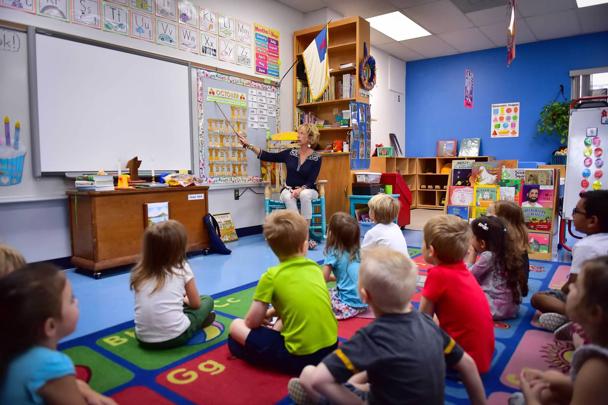

Our Curriculum
Pre-K Classes
As preschoolers gain more self-esteem, they feel ready to take on the world. Our preschool curriculum enhances their confidence by providing activities to help them become problem solvers and nurture a love of learning. With independent exploration, structured activities, and hands-on learning, our children develop a variety of skills and knowledge in areas from mathematics to reading.
We're proud of the work we do. Early learning standards, backed by education experts, inform the scope and sequence of our pre-k program. Our curriculum aligns to 72 learning standards progressing sequentially across six developmental domains. Add to this a healthy dose of running, jumping and movement to keep children active and you'll see why Happy Hands is a true leader in early childhood education.

We lay the cornerstones for math concepts such as attributes, classification and patterns while integrating STEAM content throughout the week.
Language Skills
Language, literacy, and communication skills are embedded into a child's daily experiences. We strive to create meaningful classroom experiences that help children use and build a growing vocabulary.
Math Exploration
Pre-k children are enthusiastic mathematicians. Our instructors work to ensure that our students don't simply learn numbers by rote, but instead build mathematical understanding related to real, everyday problems. Our curriculum includes important skills such as comparing and contrasting items by characteristics, following complex directions in sequence, and solving simple number problems.

Science Studies
As their cognitive and physical abilities develop, children are able to develop and test their own theories, and to engage in scientific reasoning. Our curriculum encourages students to broaden their understanding of scientific disciplines, from physics to chemistry to earth science. Children learn by participating in cooking projects and participating in multi-skill experiments, handling mechanical tools.
Creative Expressions
Pre-kindergarten is an ideal time to introduce children to artistic expression. Our pre-k teachers extend their student's skills and knowledge through process-oriented art projects. We teach sculpting with clay and etching tools, writing and illustrating books, and our students experience acting out original stories with costumes, props, and masks.

Cultural Sharing
Children are innately interested in the diversity of people and cultures. We foster the development of all areas of a child's emotional intelligence including interpersonal skills, compassion, and acceptance of personal responsibility. We believe in fostering respect for different cultures, traditions, and life styles.
Physical Wellness
Pre-k children learn about becoming responsible for their own choices and decisions. Our curriculum encourages students to learn physical wellness through physical activity, healthy eating, and personal hygiene. Everyday our children learn about themselves and others through supportive sharing times.
Schedule
| Time | Activity |
|---|---|
| 8:00 am | Arrival and Breakfast |
| 9:00 am | Morning Group Time |
| 9:25 am | Learning Centers |
| 11:00 am | Group Time |
| 11:15 am | Outdoor Play |
| 11:50 am | Lunch |
| 12:30 pm | Group Time |
| 12:45 pm | Rest Time |
| 2:15 pm | Learning Centers |
| 3:00 pm | Group Time |
| 3:15 pm | Snack |
| 4:15 pm | Learning Centers |
| 5:00 pm | Departure and Cleanup |